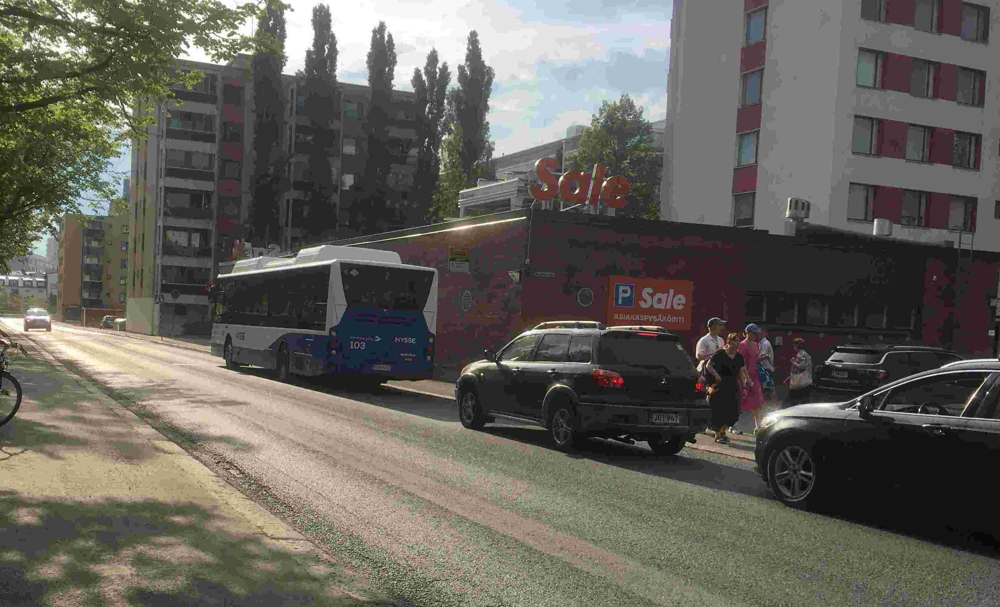

Tammela Sightseeing-kierros alkaa Tammelan Pohjolankadun Sale-lähimarketin vierestä. Paikalla on esim. bussin numero 2 pysäkki, pysäkin nimi Koiratori, pysäkin numero 0550. Jos et käytä bussia, let me know. Tai jos saavut henkilöautolla, osoitan sinulle yhden parkkipaikoistani. Säävaraus, sateella kannattaa siirtää toiseen ajankohtaan.
Säävaraus.